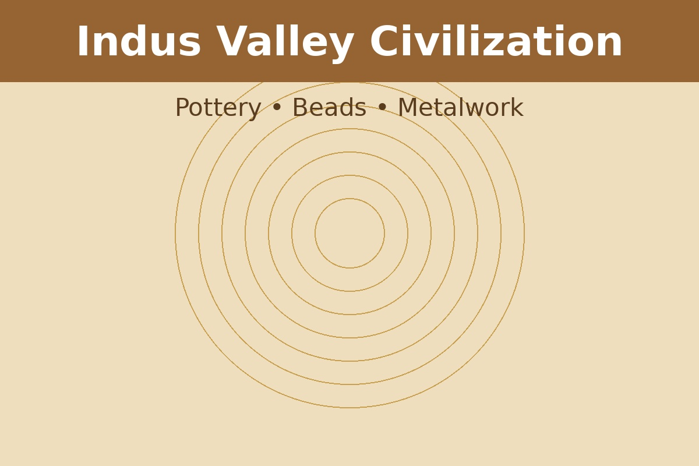
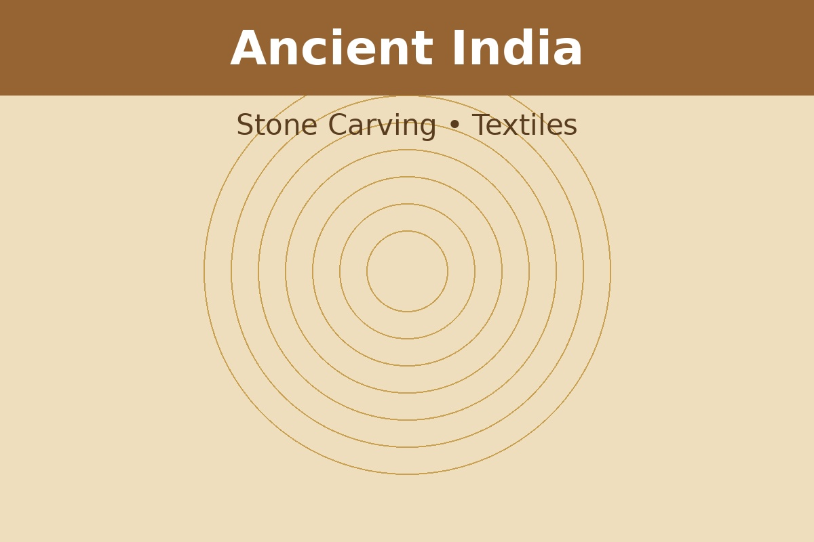
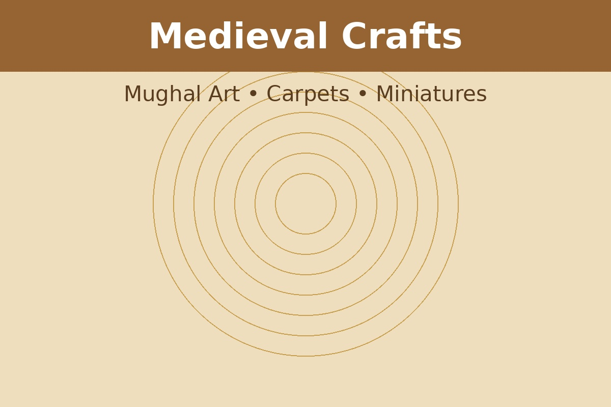
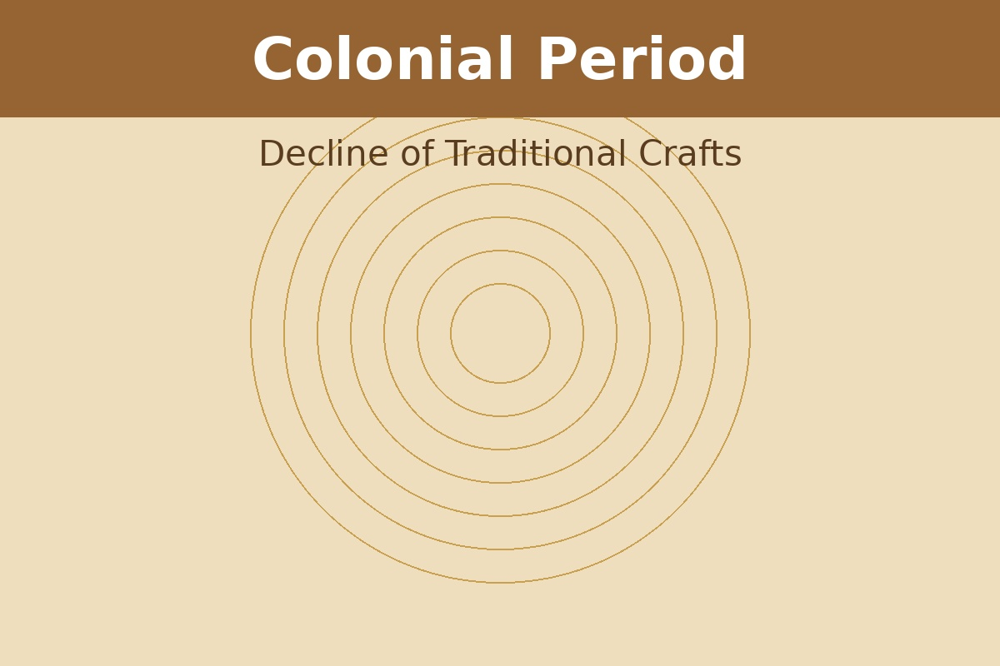
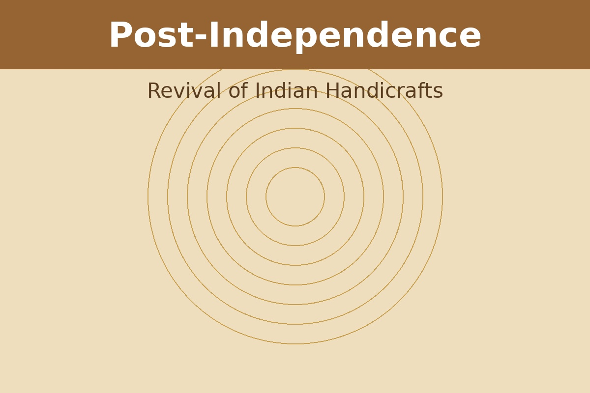
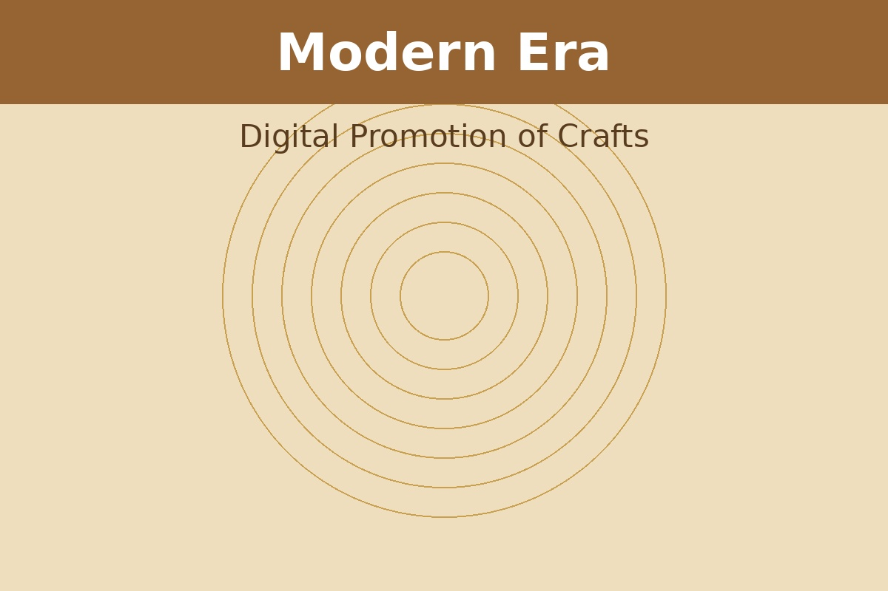

Timeline of Indian Handicrafts

2500 BCE – Indus Valley
Pottery, bead making and metal crafts flourished in the Indus Valley Civilization.

Ancient India
Stone carving, textiles and jewelry making developed across Indian kingdoms.

Medieval Period
Mughal patronage encouraged carpets, miniature paintings and metalwork.

Colonial Era
Industrial production caused decline in many traditional crafts.

Post Independence
Government initiatives helped revive Indian handicrafts.

Modern Era
Digital platforms like ShilpSetu help artisans reach global audiences.